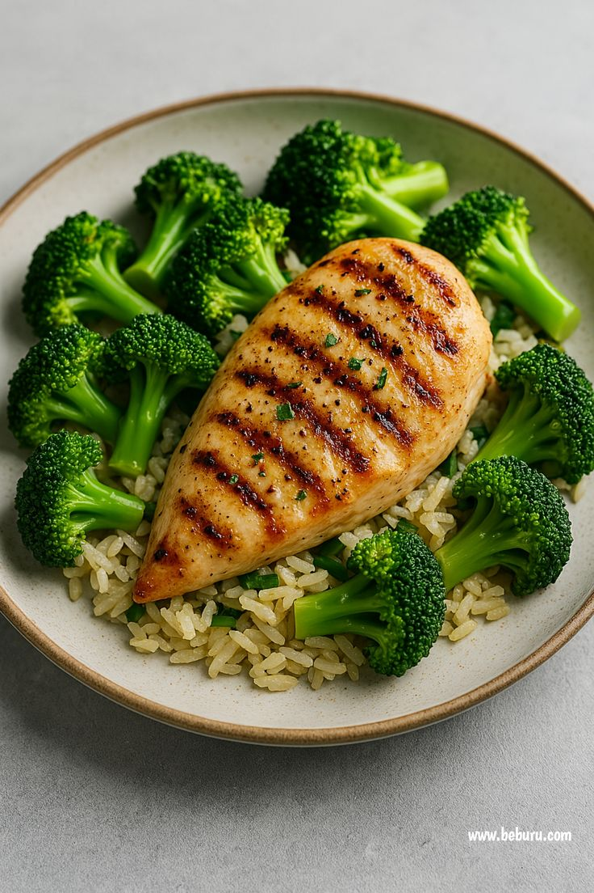
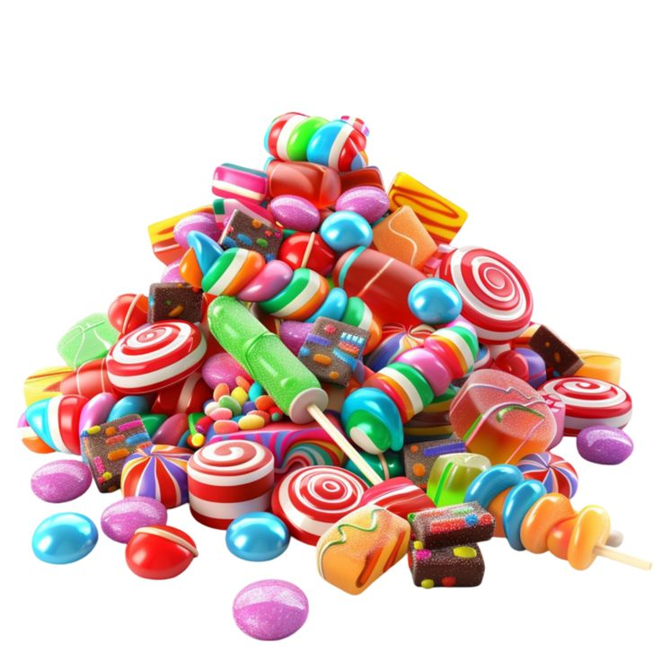
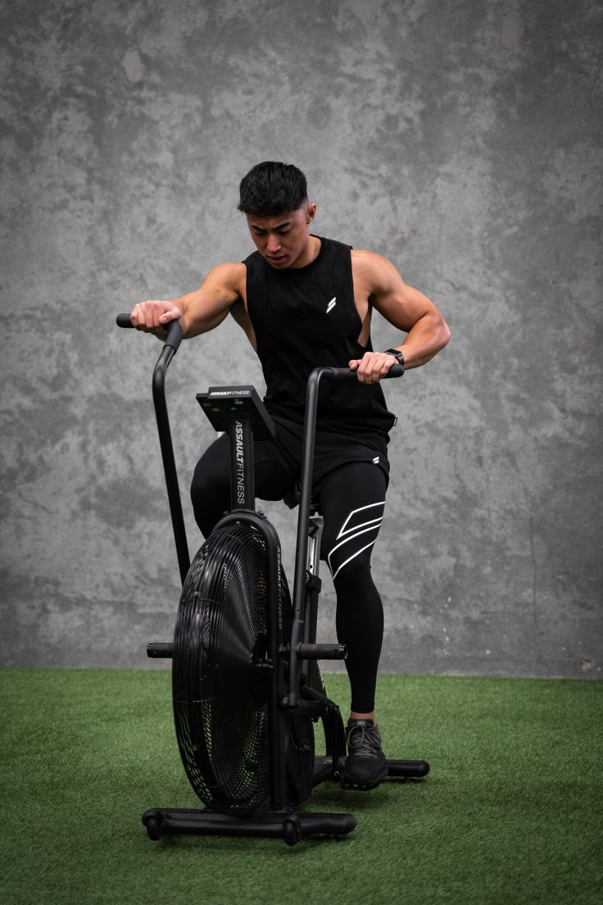
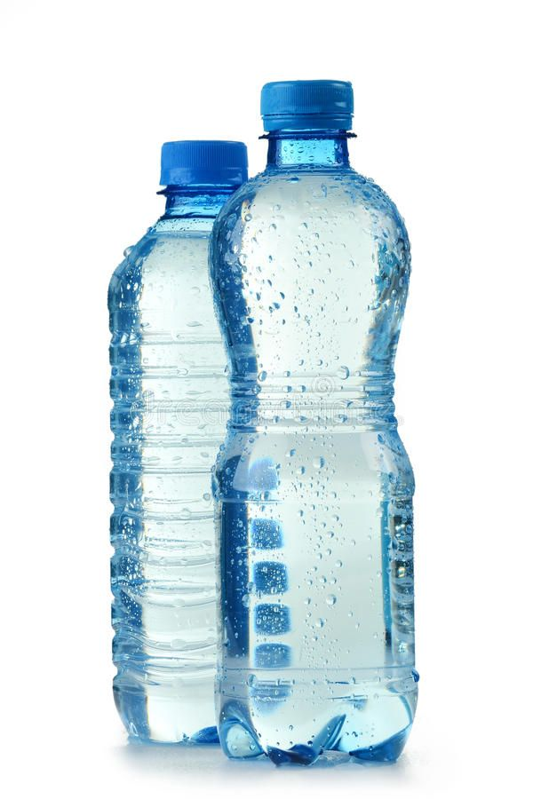
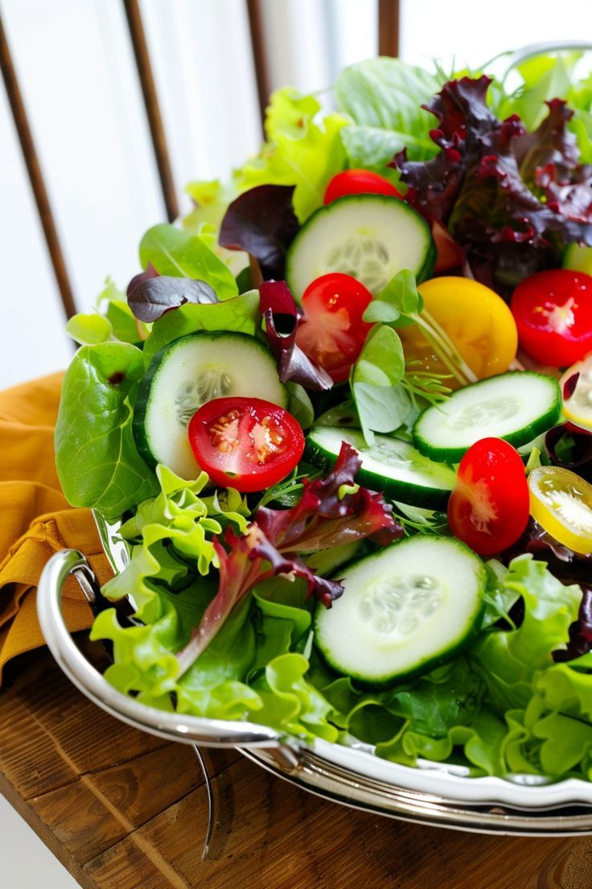
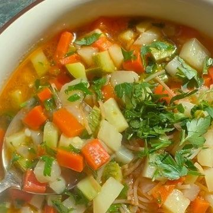

النصائح الغذائية
نصائح لزيادة العضلات:
- تناول كميات كافية من البروتين في كل وجبة. مثل البيض، الدجاج، التونة، أو مكملات البروتين.
- زيادة استهلاك الكربوهيدرات المعقدة. مثل الشوفان، البطاطا، والأرز البني لتزويدك بالطاقة.
- تناول وجبات صغيرة متعددة طوال اليوم. للحفاظ على التمثيل الغذائي وتحفيز نمو العضلات.



نصائح لخسارة الوزن:
- تقليل استهلاك السكريات والدهون المشبعة. واستبدالها بالدهون الصحية مثل زيت الزيتون والمكسرات.
- ممارسة التمارين الرياضية بانتظام. مثل الكارديو والمشي السريع لحرق السعرات.
- شرب الكثير من الماء طوال اليوم. يساعد على الشعور بالشبع وتحسين الهضم.



وصفات صحية:
- شوربة الخضار: مزيج من الخضروات الطازجة، مع مرق دجاج قليل الدهون. مثالية كوجبة خفيفة أو عشاء.
- سمك مشوي مع الخضروات: سمك مشوي غني بالبروتين مع الخضروات الموسمية الغنية بالألياف.
- سلطة الفواكه: مزيج من الفواكه الموسمية مع قليل من العسل والليمون. غنية بالفيتامينات ومنعشة.


